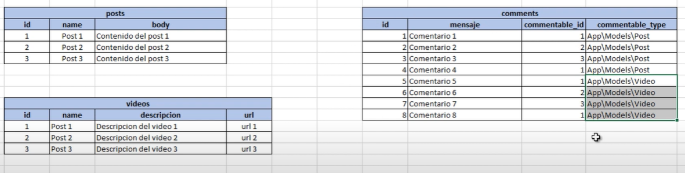

Es muy similar a la relacion anterior, solo que ahora muchos registros de la tabla principal pueden asociarse a un solo registro de las tablas relacionadas:
Entonces a la tabla con relacion Polimorfica quedaria asi:

$table->id();
$table->string('message');
$table->unsignedBigInteger('commentable_id');
$table->string('commentable_type');
$table->unsignedBigInteger('user_id');
$table->foreign('user_id')->references('id')->on('users')
->constrained()
->onDelete('cascade')
->onUpdate('cascade');
$table->timestamps();
De nuevo usamos este metodo para indicar que es una tabla polimorfica:
// Inverse Polimorfic One To Many
public function commentable()
{
return $this->morphTo();
}
Con este metodo establecemos en los otros dos modelos (Post y Video) la relacion One To Many entre las tres tablas:
// Polimorfic One To Many
public function comments()
{
return $this->morhpMany('App\Models\Comment', 'commentable');
}